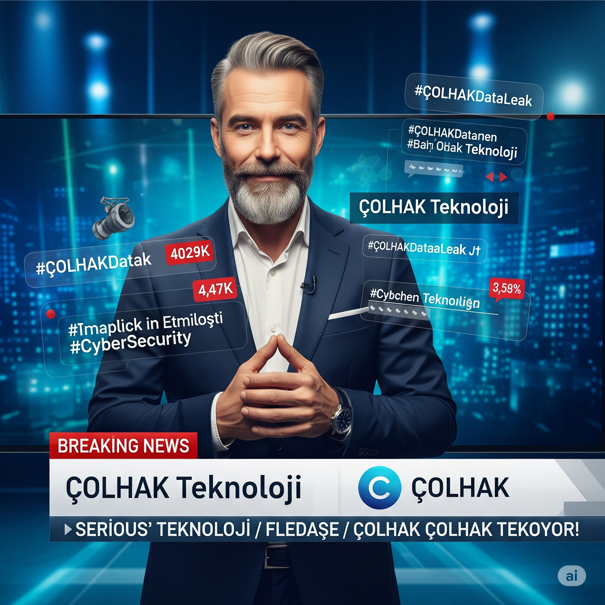
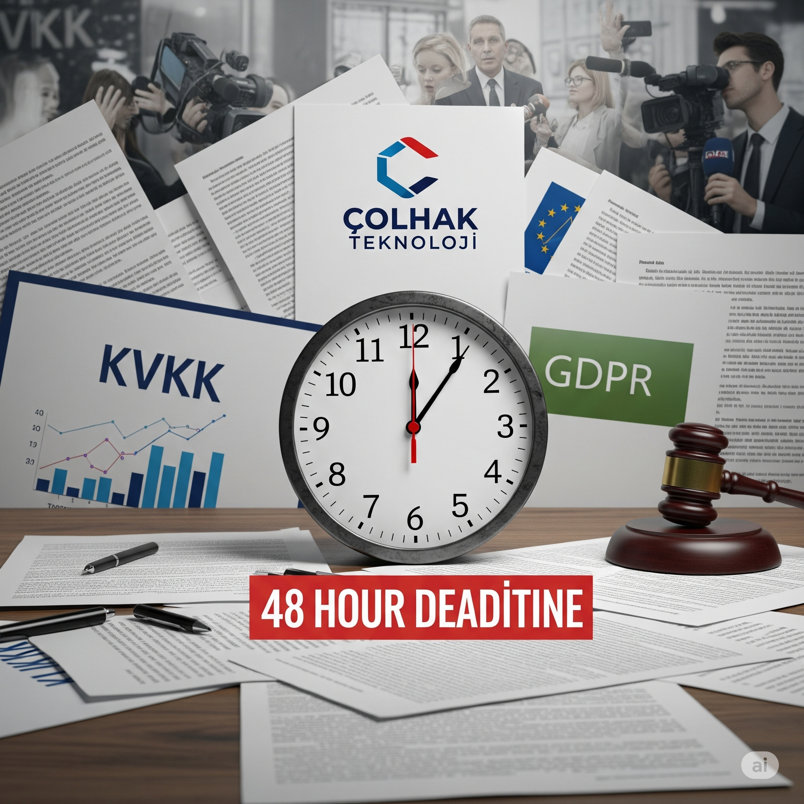

Welcome, **COLHAK Technology**'s **Cybersecurity Engineer**!
Your company hosts its risk analysis product for the finance sector in a cloud environment, and launch
is just
72 hours away. However, our security team is alarmed by unusual data extraction requests and leak
reports coming from outside. It is suspected that an attacker has infiltrated through an unprotected
data store, a misconfigured
access permission, or a disabled security step.
Your Mission: Stop this secret data leak, contain the damage, and ensure the future
resilience of your cloud infrastructure!
Simulation Roles
Your Role: Cybersecurity Engineer
You are responsible for the security of the cloud infrastructure. You play an
active role in areas such as technical analysis, detection of misconfigurations, and
access permissions.
The results of your choices will directly affect the outcome.
CEO Dilara Akin Prioritizes reputation and media.
CTO Furkan Tekin Knows the technical infrastructure,
supports you.
CISO Can Colhak Responsible for security, in a panic.
PR Director Serap Nur Wants control over the press.
Finance Director Enes Mert Project cancellation would be a
budgetary disaster.
Key Metrics
Data Leak Size Amount of sensitive data leaked.
(Start: 0 GB)
Financial Loss Cost of the crisis to the company. (Start:
$0)
Customer Trust Customers' belief in the company. (Start:
100)
Reputation Score Your company's image in the public and sector.
(Start: 100)
Morning 09:00 - Call from Security Team and Unusual Traffic
You start the day with an urgent call from the security operations team. The Lead Analyst reports
unusual data extraction requests from your risk analysis product in the cloud environment to the
outside.
Specifically, there is abnormal traffic flow from a data store named `Analysis-Data-Prod`.
Launch is only 72 hours away and every minute is critical.
The attacker is potentially using:
A data store left open to the public,
A misconfigured access permission,
A disabled additional security verification,
Or an unprotected cloud function.
As a Cybersecurity Engineer, what will be your first reaction?
Learning Note: The first moments of a crisis are
critical.
Rapid intervention or intelligence gathering? Your decision will have both technical and
operational consequences.
Day 1: Afternoon - Storage Vulnerability Discovery
Afternoon 15:30 - "Analysis-Data-Prod" Data Store is Public!
Following initial interventions, the team examined the configuration of the `Analysis-Data-Prod`
data store in depth. You encountered a shocking finding: The data store was accidentally set to
"Public"!
This means the attacker can pull data with direct requests. Also, audit logs confirmed that
**over 500 GB of data** was leaked from this store in the last 24 hours.
This includes sensitive analysis algorithms and customer test data that form the basis of your
risk analysis product for the finance sector.
In the face of this critical finding, what will be your next urgent technical step?
Learning Note: Misconfigurations are one of the biggest
vulnerabilities in cloud security. Access controls for the most critical assets must be
constantly audited.
Day 2: Morning - Identity and Access Disaster
Morning 09:30 - Ghost Account of Former Developer and Full Access!
With the data store closed, you began examining access logs to discover another layer of the
attack. You found that the account of a former developer (`developer_cem`) who left the company
months ago is still active and shockingly has **full authority over all cloud resources**!
It was determined that this account performed suspicious operations via the management panel
just before accessing the `Analysis-Data-Prod` data store.
It seems the attacker gained initial access using this "ghost account".
What will you do to close this critical vulnerability and prevent further movement by the
attacker?
Learning Note: Access permissions and legacy account
management form the basis of cloud security. Even the smallest vulnerability can lead to full
access to the entire system.
Day 2: Afternoon - Suspicious Internal Connections
Afternoon 14:00 - A rumor of an Attack Center?
The use of the former developer account suggests that the attacker is not only leaking data from
the outside but also trying to persist within your internal network. In network traffic logs,
you detected encrypted and continuous data transfer from an internal computer (`10.0.0.42`) to
an external Telegram server.
This computer belongs to a developer in the Finance Department.
This situation may indicate that the attacker is using a compromised internal device as an
**attack control center**. However, this also holds the possibility that the developer in the
Finance Department is conducting an "allowed" test or research. CTO Furkan Tekin states that
their departments frequently conduct tests with external services.
How will you handle this suspicious internal connection?
Learning Note: Internal threats are the hardest to
detect and manage. Wrong decisions can have devastating effects on both security and internal
trust.
Day 3: Morning - Media Leak and Reputation Disaster
Morning 08:00 - Trending on Social Media: "Security Flaw in COLHAK Product!"
Just as your internal investigation continues, the nightmare scenario comes true: A technology
journalist with a high following on social media shares a post titled "Claims of massive
security flaw and customer data leak in COLHAK Technology's highly anticipated product project!"
The post quickly goes viral and media outlets start reaching out to you. With only hours left
until launch, CEO Dilara Akin urgently calls you to her office. She has a serious expression on
her face: *"This is a disaster! We must make a statement immediately. Our reputation is being
destroyed! What should we do?"*

Together with PR Director Serap Nur and the Legal Counsel, how will you manage this media
crisis and what message will you give to the public?
Learning Note: A media crisis can be one of the most
devastating consequences of a cyber attack. Reputation management, transparency, speed, and the
right message are key to regaining public trust.
Day 3: Afternoon - Board Meeting and Critical
Decision
Afternoon 13:00 - Launch Cancellation?
In the midst of the media crisis, the board of directors gathers for an emergency meeting.
Everyone has a different priority and tension is high. The moment of decision has arrived and
everyone is looking at you. And at the end of the meeting, they offered you 2 options:
As a Cybersecurity Engineer, under all this pressure, how will you make the final major
technical and strategic decision that will determine the company's fate?
Learning Note: Critical business decisions can directly
conflict with technical security risks. In such moments, finding balance and effective
communication with management is vital.
Day 3: Evening - Legal Obligations
Evening 18:00 - Call from Legal Counsel
While dealing with the technical and managerial dimensions of the crisis, you receive a worried
call from Legal Counsel Zeynep Kaya: *"According to the data we have, the leaked customer
information is sensitive data under KVKK and GDPR. This could bring us massive fines and
lawsuits. We need to make an official data breach notification to the relevant institutions
within 48 hours. This situation will directly affect our perception in the public eye and our
legal position. What are we doing?"*

How will you handle this legal obligation and reputation risk?
Learning Note: Legal compliance in data breaches not
only avoids fines but also reflects the company's ethical stance and customer trust.
Post-Crisis Evaluation Report
Simulation completed. A detailed breakdown of your crisis management performance is below.